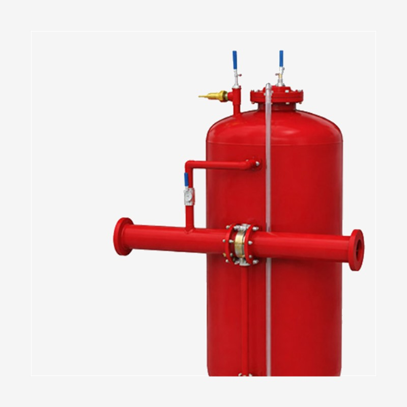
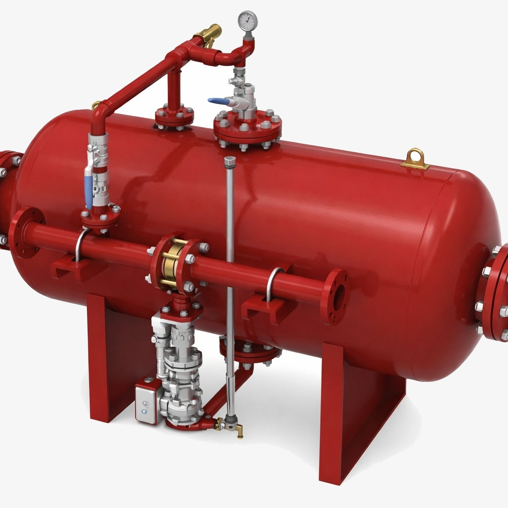
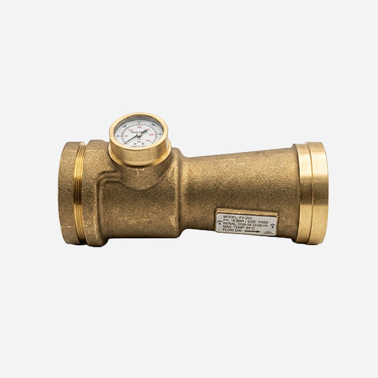
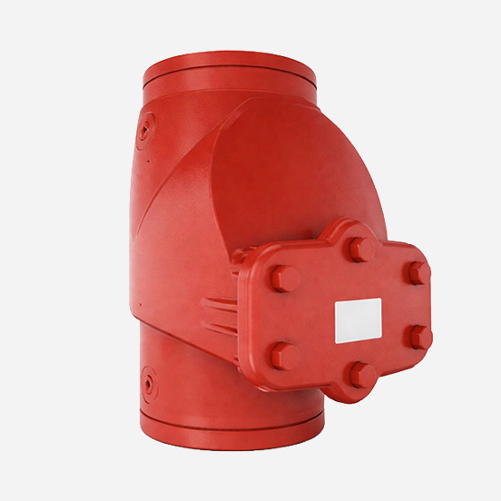
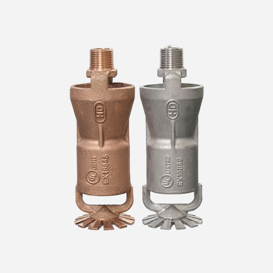
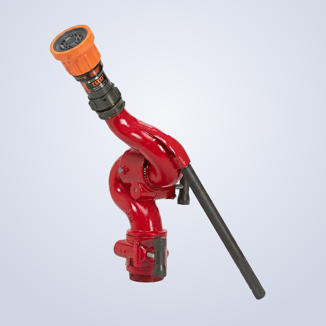
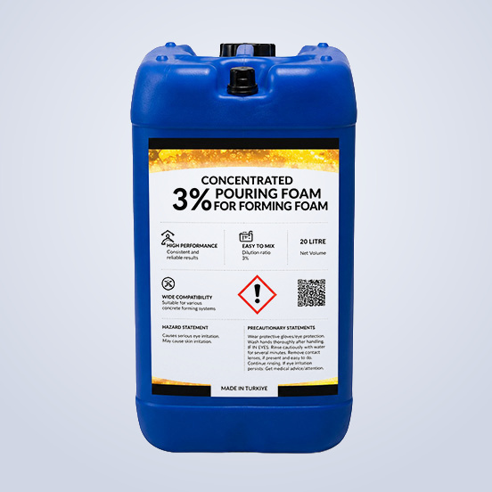
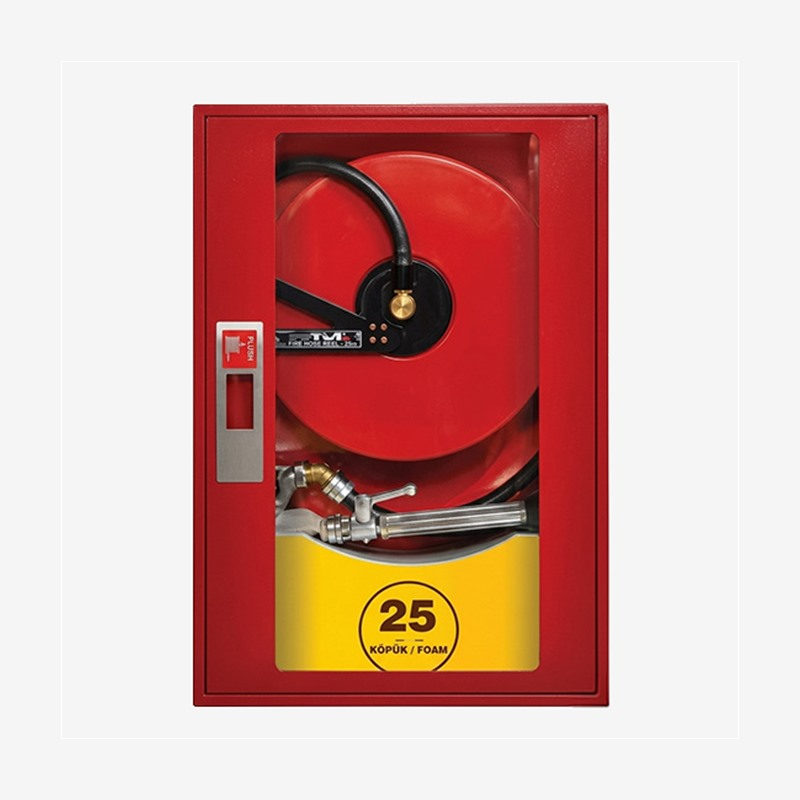

NFPA 11 compliant foam suppression system components for petrochemical, refinery, aviation and industrial facilities. CE / FM / UL certified products.

Vertical tank that maintains foam concentrate in the bladder and enables proportioning with system pressure. Carbon steel body, flanged foam/water connections; 300–15,000 L, max. 175 PSI / 12 bar. CE / FM / UL certified.

Horizontally positioned bladder tank for areas with low ceiling height and large-capacity applications. Carbon steel body, flanged connections; 300–15,000 L, max. 175 PSI / 12 bar. CE / FM / UL certified.

Mechanical proportioners that mix foam concentrate with water at 1%, 3% and 6% ratios. Foam mixer (100–800 L/min), in-line type (2.5″–6″), wide range (100–17,000 L/min) and bladder tank type (100–18,500 L/min) options. CE / FM certified.

Special control valves resistant to foam concentrate for activation, isolation and test functions. Nitrile inner lining, electric or pneumatic actuator option. DN 50–DN 200, NFPA 11 / FM Global compliant.

Air-induction nozzles and foam pourers delivering foam solution to tank surface or floor. Flow rate 200–4,000 L/min; aluminium or stainless steel; 3%/6% concentrate compatible. NFPA 11 / EN 13565.

Manual (1,500–3,000 L/min), portable (1,900–4,700 L/min), oscillating (4,000–8,000 L/min) and remote-controlled (max. 34.5 bar) high-flow water-foam monitors. 360° rotation, CE / FM certified.

AFFF (3%), AR-AFFF (3%) and FFFP (3%) for Class B fires; protein-based and AR foam concentrates for Class A and polar solvent fires. CE / FM / UL certified, compatible with all TATCO proportioning systems.

Integrated dual-system cabinet housing both water and foam lines in a single cabinet. Proportioner and foam lance included; 2″ water line + 1.5″ foam line; 20–30 m foam hose. NFPA 11 / TS EN 671 compliant.
NFPA 11 compliant full system design for petrochemical, refinery and industrial facilities.